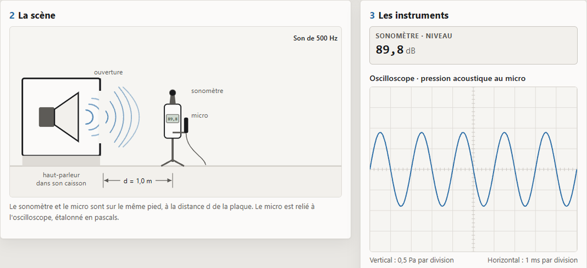
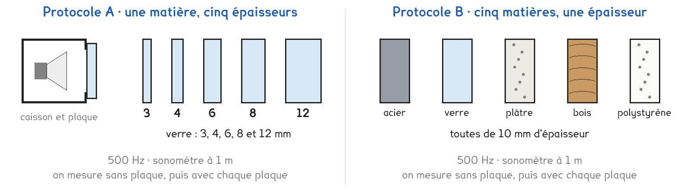
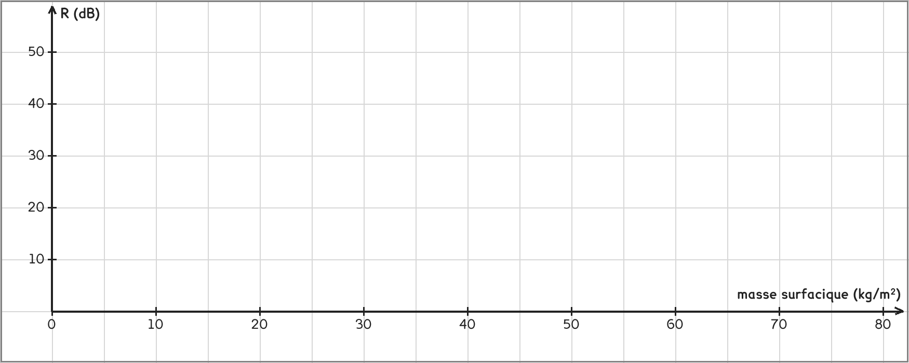

Tle Bac Pro · OBM · TP sur simulation SIM-14
Qu'est-ce qui fait qu'une plaque arrête bien le son : son épaisseur, ou sa matière ?
3 figures
Sujet. Dans la chambre, on entend la musique du voisin à travers la cloison, une plaque de plâtre de 12,5 mm. Pour dormir au calme, vaut-il mieux une plaque plus épaisse, ou une autre matière ?
Problématique : qu’est-ce qui fait qu’une plaque arrête bien le son : son épaisseur, ou sa matière ?
La simulation. Ouvrir « Un son à travers une paroi » : le fichier attenuation-son.html, sur l’ENT ou la clé du professeur.
Un haut-parleur, dans un caisson, envoie un son par une ouverture. On la ferme avec une plaque. Le son qui arrive sur la plaque est le son incident ; celui qui passe est le son transmis. Deux grandeurs disent ce que la plaque arrête :
a) Calculer R. Le premier de chaque ligne est fait en exemple.
| 85,0 − 60,0 = 25,0 dB | 88,5 − 70,0 = ……… dB | 90,2 − 52,7 = ……… dB |
|---|---|---|
| coefficient 10 : R = 20 dB | coefficient 100 : R = ……… dB | coefficient 30 : R = ……… dB |
Voici la simulation, capturée sans plaque, pour un son de 500 Hz.

b) Relever le niveau au sonomètre, puis l’amplitude de la pression au micro.
Niveau : ……… dB · amplitude : ……… divisions × ……… Pa = ……… Pa
Deux protocoles répondent à la même question. Une partie de la classe prend A, l’autre prend B, et on compare à la fin.

Protocole A · une matière, cinq épaisseurs. Des plaques de verre de 3 à 12 mm, l’une après l’autre. Seule l’épaisseur change.
Protocole B · cinq matières, une épaisseur. Acier, verre, plâtre, bois et polystyrène, tous de 10 mm. Seule la matière change.
c) Compléter le tableau pour comparer les deux protocoles.
| Protocole A | Protocole B | |
|---|---|---|
| Ce qu’on change | …………………………… | …………………………… |
| Ce qu’on garde fixe | …………………………… | …………………………… |
| Il permet de classer des matières | oui · non | oui · non |
Le choix se fait maintenant, avant d’ouvrir la simulation.
d) Quel protocole prenez-vous ? Justifier en une phrase.
Le professeur peut imposer celui qui reste disponible.
Je prends le protocole ……… parce que ……………………………………………………………………
e) Deux hypothèses, avant toute mesure. Entourer.
Épaisseur doublée : R double · R gagne quelques dB · R ne change pas
Arrête le mieux : polystyrène · bois · plâtre · verre · acier
Avant de commencer. Ouvrir attenuation-son.html. Fréquence du son 500 Hz, distance 1,0 m. Garder chaque mesure avec Garder cette mesure dans le tableau.
La masse d’un mètre carré de plaque est sa masse surfacique : ms = ρ × e, avec e en mètres. Masses volumiques en kg/m³ : acier 7 800 · verre 2 500 · plâtre 720 · bois 600 · polystyrène 20.
f) Compléter le tableau pour votre protocole.
| La plaque et son épaisseur | ms (kg/m²) | L (dB) | R = Lsans − L (dB) |
|---|---|---|---|
| aucune | 0 | 0 | |
Le tableau se lit mieux en graphique.
g) Placer vos points : R en fonction de la masse surfacique ms.
Un point par plaque, puis une courbe à main levée qui passe au plus près des points.

h) Pour une seule plaque, à l’oscilloscope : calculer le coefficient d’atténuation,
puis R = 20 × log(coefficient).
psans = ……… Pa · pavec = ……… Pa · coefficient = ……… · R = ……… dB
i) Comparer le R de la question h à celui du sonomètre pour la même plaque.
j) Placer sur votre graphe les points d’un groupe de l’autre protocole.
Tombent-ils sur la même courbe ? L’hypothèse e tient-elle ?
k) Citer ce qu’une vraie cloison ferait apparaître, et que la simulation cache.
l) Répondre à la problématique en deux phrases.
Ce que ce TP a établi, et qui vaut pour toute paroi pleine :
À RETENIR
Le coefficient d’atténuation d’une plaque est le rapport pincidente ÷ ptransmise. L’indice d’affaiblissement R est la différence des niveaux sans et avec la plaque, en décibels : R = 20 × log(coefficient).
Une plaque pleine arrête d’autant mieux le son qu’elle est lourde : R augmente avec la masse surfacique ms = ρ × e. Doubler l’épaisseur ou prendre une matière deux fois plus dense fait gagner environ 6 dB, pas deux fois plus.
Refaire la mesure du verre de 4 mm à 250 Hz, puis à 1 000 Hz. Pourquoi entend-on surtout les sons graves de la musique du voisin ?
TP sur simulation de physique-chimie. Le travail se fait sur la feuille du TP : cette page en est la version à l'écran, sans les lignes à remplir. Rien n'est enregistré.